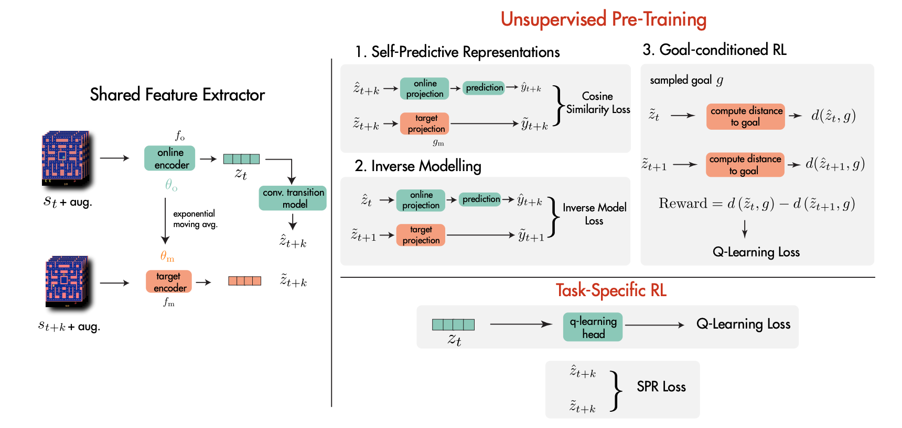
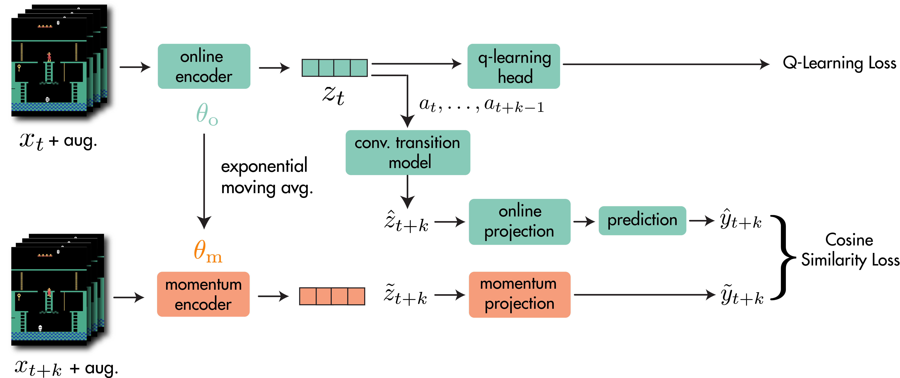
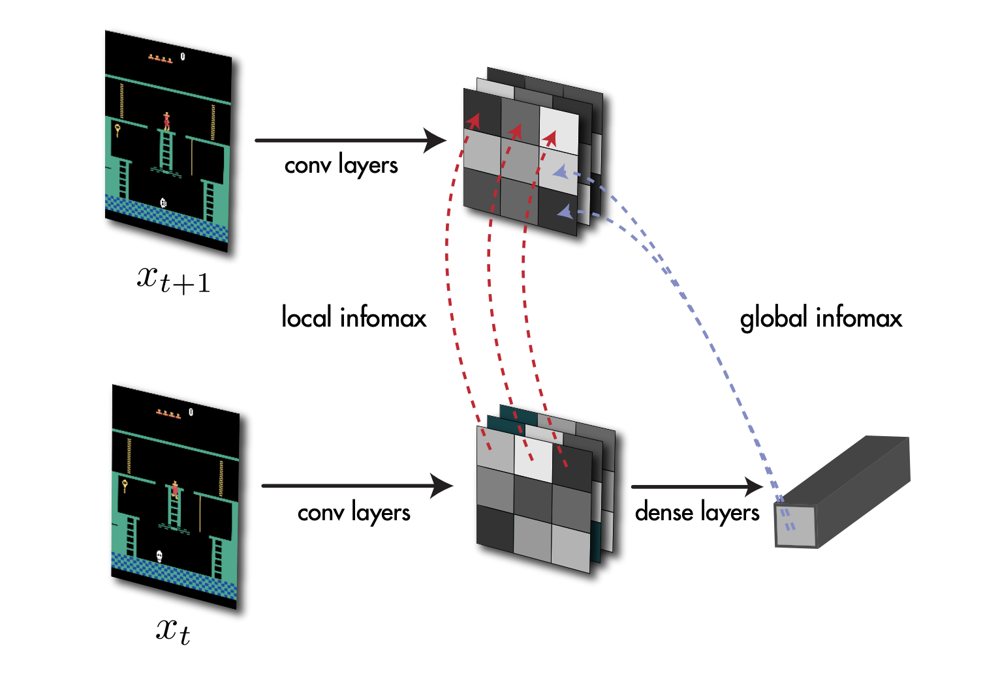

Hi! I am Ankesh Anand, a PhD student in Artifical Intelligence at Mila, working with Aaron Courville on Representation Rearning and Reinforcement Learning. I have also worked as a research intern at DeepMind, London with Jessica Hamrick, and at Microsoft Research, Montreal with Devon Hjelm and Philip Bachman.
Earlier, I graduated from IIT Kharagpur with a Bachelors and Masters in Mathematics and Computing. I have also spent time at VISA, HackerEarth and Google Summer of Code.
Publications


Data-Efficient RL with
Self-Predictive Representations
ICLR 2021, Spotlight

Unsupervised State Representation
Learning in Atari
NeurIPS 2019

Blindfold Baselines for Embodied QA
ViGIL Workshop at NeurIPS 2018

HoME: a Household Multimodal Environment
ICLR 2018, Workshop Track